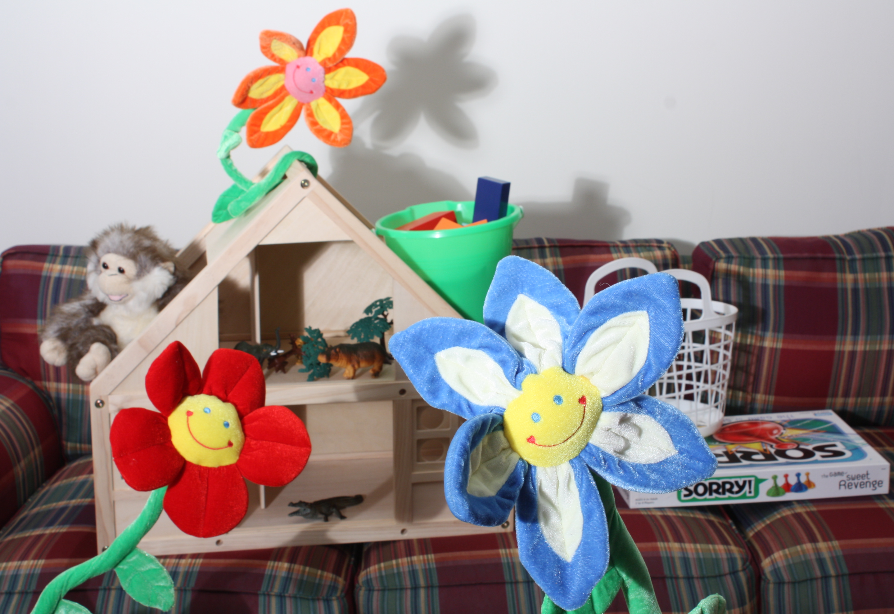
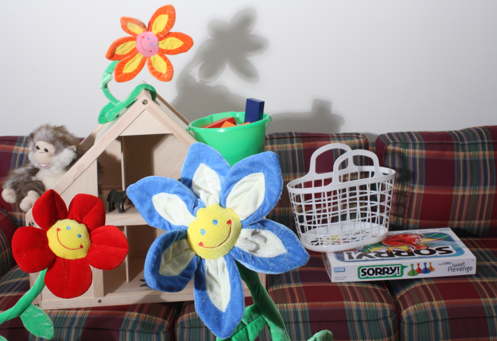
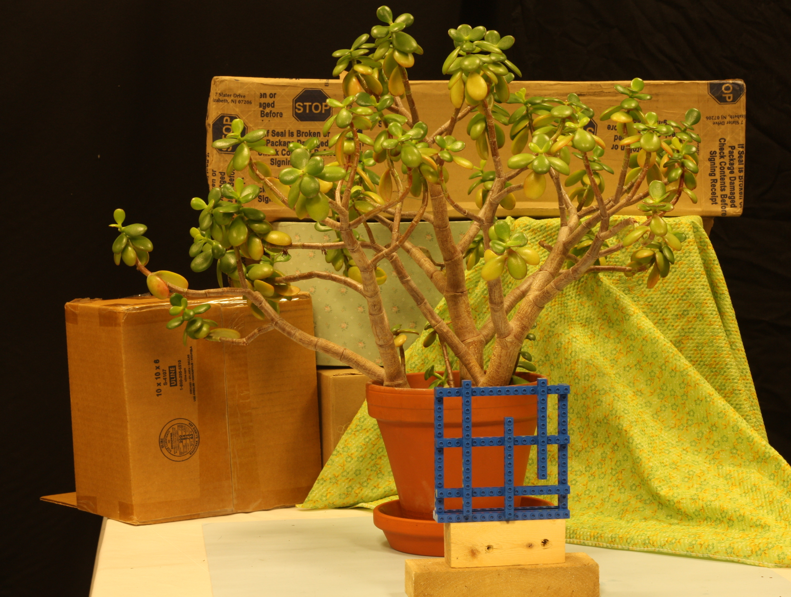
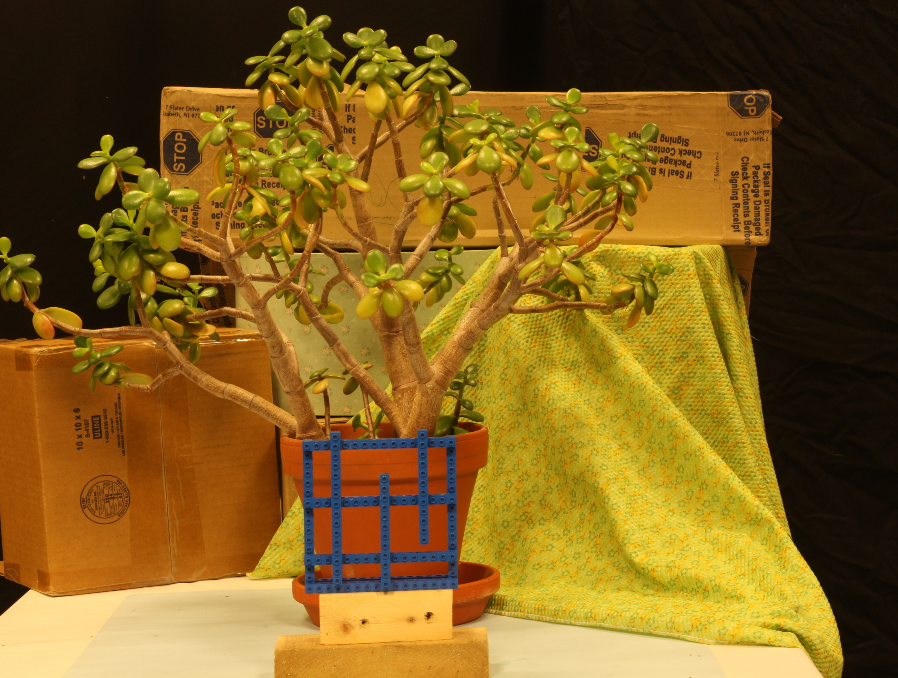
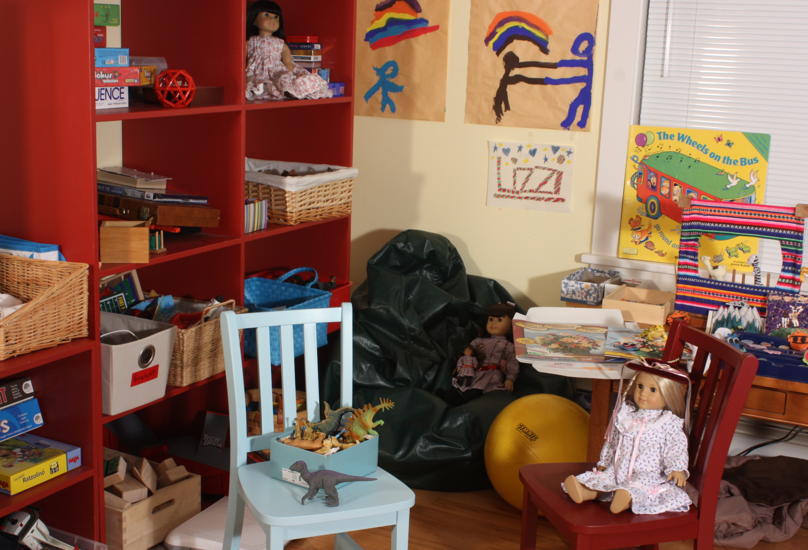
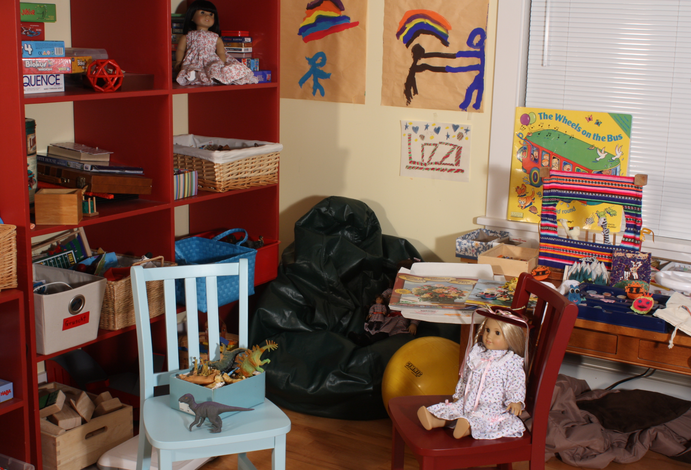
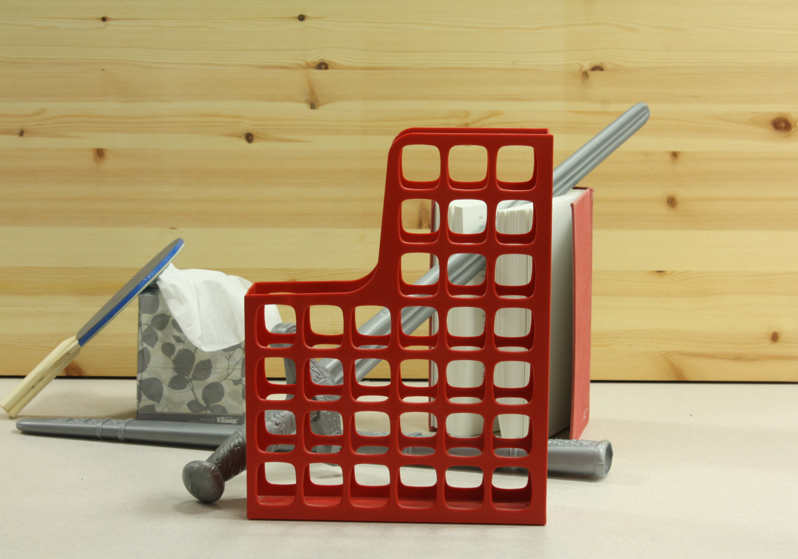
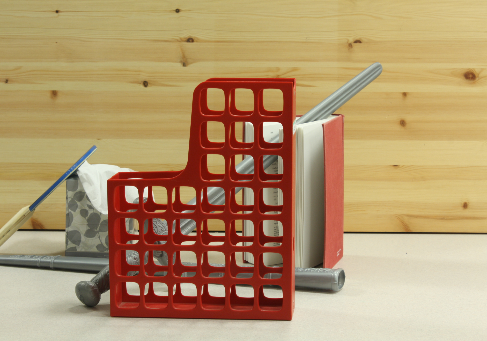

Flowers


If this clip does not play, try Safari or download the .MOV (Chrome often needs H.264 in .MP4).
This project synthesizes images from a novel viewpoint using depth maps paired with RGB images from a rectified stereo rig. Ground-truth disparities from the Middlebury stereo dataset drive depth estimation and reprojection. Each scene includes calibration (calib.txt), left and right images (im0.png, im1.png), and disparity maps (disp0.pfm, disp1.pfm).
python main.py -d <relative path to dataset> -x <x-shift> -v <video generation>
Horizontal streaks remain in both interpolated and extrapolated frames. A richer occlusion model than the z-buffer alone could help. Hole-fill color choice also affects quality. Extrapolation beyond the two input views lacks real scene content, so errors increase. Uniform regions (for example walls) can show diagonal streaks; 2×2 splatting reduces but does not remove them—especially visible in the playroom results.

Left frame, Right frame, and Viewpoint Sweep Video (−0.3 to 1.3 in steps of 0.1)


If this clip does not play, try Safari or download the .MOV (Chrome often needs H.264 in .MP4).


If this clip does not play, try Safari or download the .MOV (Chrome often needs H.264 in .MP4).


If this clip does not play, try Safari or download the .MOV (Chrome often needs H.264 in .MP4).


If this clip does not play, try Safari or download the .MOV (Chrome often needs H.264 in .MP4).